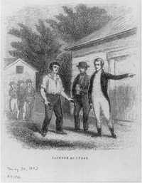

Andrew Jackson's childhood serves as a background for why some of the aspects that made him such a unique president!

Andrew Jackson was born on March 15, 1767, in the Waxhaws region on the border of North and South Carolina. He was the third son of Elizabeth and Andrew Jackson Sr.

Andrew Jackson was born on March 15, 1767, in the Waxhaws region on the border of North and South Carolina.

Text for Column 3